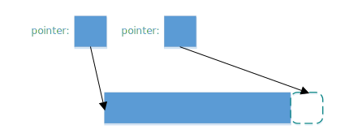
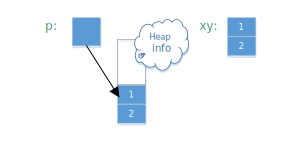

抽象与 C++ 机器模型
Bjarne Stroustrup
摘要
C++ 被设计为一门系统编程语言，从最早的年代开始，就已经被用来做嵌入式系统编程和其它资源受限的编程。这篇文章将简要讨论 C++ 的计算和数据的基本模型如何有助于时间和空间性能，硬件访问和可预测性。如果这就是所有我们所需要的，我们可以只写汇编或者 C ，因此我会展示这些基本的特征如何与抽象的机制（例如类、继承和模板）交互，从而控制系统复杂度和提高正确性，并同时不影响期望的可预测性和性能。
理想与限制
C++ [ISO, 2003] [Stroustrup, 2000] 实质上被用于各种应用领域，包括科学计算、编译器、操作系统、设备驱动、游戏、分布式系统基础架构、仿真、通信、嵌入式系统应用（例如火星自动驾驶汽车）、航空软件、CAD/CAM系统、普通商业应用、图形学、电子商务网站和大型Web应用（例如航空订票网站）。一些是使用 C++ 的应用，可以参考 http://www.stroustrup.com/applications.html 。
C++ 是如何支持如此大范围的应用的呢？基本的回答是：“通过高效使用硬件，还有有效的抽象”。这篇文章的目的是非常简洁地描述 C++ 的基本机器模型，还有它的抽象机制如何将用户的高级概念映射到这个模型，而不损失来时间和空间的效率。在这一背景下，我们必须首先考察 C++ 被设计用来支持的一般理想：
-
工作在抽象的最灵活层面
直接使用应用领域的概念（例如带状对角矩阵、游戏头像、还有图形变换）来表达的代码，比使用底层概念（例如字节、指针、数据结构和简单循环）来表达的代码更容易正确实现，更容易理解，因此维护也更容易。“可行”指的是编程语言使用的表现形式、库和工具的可用性、优化器的质量、可用内存的大小、计算机的性能、实时性约束、程序员的北京，以及会限制我们实现这个理想的诸多其它因素。然而这并不是理想情况。工具制造者面临的挑战是使得抽象对于更大领域的应用切实可行（有效、经济、易于管理等）。
说到“抽象”，这里并不是指“含糊”或者“不精确”。相反地，理想情况是应用程序概念和源代码中定义的实体之间的一一对应： * 直接在代码中表现概念 * 在独立的代码中表现不相关的概念 * 直接在代码中表现概念之间的关系 * 当合并是合理的情况下（也只有在这种情况下）可以自由地将概念的合并体现在代码中
“概念之间的关系”的例子有继承（面向对象编程）和参数化类型和算法（泛型编程）。
这篇文章是关于把这些想法应用到嵌入式系统编程中，特别是在需要使用底层编程的技术硬件实时和高可靠性嵌入式系统编程中。
嵌入式系统编程的特殊性在哪里呢？就想很多编程问题的回答一样，这个问题很难回答，因为“嵌入式系统编程”没有一个被广泛接受的定义。该领域从独立工具（例如自动开车窗器）微小的控制器、立体声放大器、电饭煲、数码相机、到大型交换机和整个飞机控制系统。我想强调的是除了最微小的系统之外的所有系统：在4-bit微处理器可能实现不了ISO C++，但是任何比它更强大的系统都可以从这里描述的理想和技术中获益。从系统设计观点看的要点如下： * 系统不只是一台计算机 它是一个包含一台或者多台计算机的“小工具”/系统 * 正确性 “硬件的错误”通常不能被当作借口 * 可靠性要求 通常比“普通的办公应用”要求更严格 * 资源限制 大多数嵌入式系统的内存或时间都受限 * 实时性限制 强制或者软性deadline * 没有操作员 只有“小工具”的使用者 * 长服务生命期 在该工具数年的服务生命期中程序不能被更新 * 一些系统不能被拿下来维护 一点都不允许或者几天才可以维护一次
在这个领域中，C++ 可以提供那些汇编和 C 所不能提供的呢？尤其是， C++ 的抽象机制对它与 C 共享的机器模型增加了什么呢？关于更多 C 和 C++ 之间的讨论，参见[Stroustrup, 2002]
机器模型
C++ 直接映射到硬件。它的基本类型（例如 char，int，double ）直接映射到内存实体（例如字节、字和寄存器），对这些类型来说，大部分算术和逻辑运算都被处理器直接支持。指针、数组和引用直接反映了寻址硬件。在 C++ 程序员的表达和机器的设施之间没有“抽象”，“虚拟”，或者数学模型。这使得生成代码更简单也更好。 C++ 的模型并不繁复，除了极少数的例外，与 C 等同。例如在 C++ 中没有可能用来表达二阶缓存、内存映射单元、ROM或者特殊目的寄存器。这些概念很难抽象（以一种有用和可抑制的方式），但是在标准库的设施中，甚至对这些如此困难的设施都是有支持的（参见[ISO, 2005]中ROM 能力与硬件接口部分）。使用 C++ ，只要我们想，我们可以十分接近硬件。
让我举几个例子来说明从 C++ 到内存的映射。要点不是复杂，而是简明。
基本算术类型被简单地映射到合适大小的内存区域上。一个典型的实现会把 char 映射到字节，int 映射到字，double 映射到双字：

选择精确的映射是为了对给定的硬件做到最好。对一列对象的访问可以通过数组处理，一般会通过保存机器地址的指针来访问。通常使用指向数组起始位置的指针和指向数组最后一个元素后面一个位置的指针来操纵对象序列：

让用户和代码生成器生成的这种地址的可行性性是很重要的。
用户自定义类型可以通过简单的合并来创建。考虑一个简单的类型Point:
class Point { int x; int y; /* ... */};
Point xy(1,2);
Point *p = new Point(1,2);
一个 Point 只是其数据成员的拼接，因此 Point xy 的大小就是 int 大小的两倍。除非我们显式在自由存储中分配一个 Point，由于多了一个指向 Point 的指针 p，我们遇到了内存 冗余 （还有过度分配）。类似地，基本的集成只涉及到将基类和派生类的成员进行拼接：
class X { int b; }; // 原文少了个分号
class Y: public X { int d;};
只有当我们加入虚函数（C++ 的提供运行时多态的机制），才需要添加一些辅助的数据结构，它们也只是些函数的列表：
class Shape {
public:
virtual void drow() = 0;
virtual Point center() const = 0;
// ...
};
class Circle: public Shape {
Point c;
double radius;
public:
viod draw() { /* draw the circle */ }
Point center() const { return c; }
// ...
};
Shape *p = new Circle(Point(1,2), 3.4);
显然这个简单的说明图省略了很多东西，但它用来估计时间和空间代价是很准确的：所见即所得。更多细节请参考[ISO, 2005]。一般来说， C+ 的实遵守零间接成本原则：你不需要为未使用的部件付出代价[Stroustrup, 1994]。更进一步：你使用的那些部件，就算手动优化也不能做得更好。
请注意并不是每种语言都提供这种到硬件的简单映射，并遵守这些简单的准则。考虑一个用户自定义类型的对象的数组在 C++ 中的布局：
class complex { double re, im; /* ... */ }；
complex a[]= { {1, 2}, {3, 4}};
它的可能大小是 4*sizeof(double) ，即可能为8个字长。将它跟一个“纯面向对象语言”中的布局相比，那里每个用户自定义对象在堆中独立地分配地址，并通过引用来访问：

它的可能大小是 3 * sizeof(reference) + 3 * sizeof(heap_overhead) + 4 * sizeof(double)。假设一个引用占一个字长，而且堆带来的间接开销是两个自唱，我们可能需要17个字而不是 C++ 的8个字。这些多出来的内存开销还伴随着内存分配和元素间接访问带来的运行时冗余。内存的间接访问常常会使缓存性能下降，而且限制了 ROMability
神话与限制
有一种态度并不罕见，是说“如果某个东西是优雅、可行、高阶、普适、可读的，等等，那么它必然很慢而且很复杂。” 这种态度是如此根深蒂固，以至于有些人实质上拒绝使用 C 未提供的 C++ 的所有功能，而不觉得需要证据。这是不幸的，因为。。
抽象机制
这段代码的性能依赖于内联函数调用。人们已经正确地意识到，当一个大的函数被调用多次时（无论是很多不同的调用，还是仅有几个调用但是有很多不同的模板参数），内联会导致代码膨胀。然而，这种论调对小函数（例如 complex 定义的 '=' 和 '' 操作符）不适用，此时实际的操作比函数 preamble 和返回值又小又快。在这些情况下，相比普通的函数和函数调用，内联在时间和空间上都有性能提升。事实上，类对象和内联函数的一个流行的应用就是实现参数化，这个参数可以是单个机器指令，例如 '<' [Stroustrup, 1999]
将一个大函数内联通常是个很坏的主意。这样做通常揭示了程序员的大意或是优化器做得太差。
与模板会导致代码膨胀的指责形成鲜明对比的是，模板恰恰可以用来节省代码空间。 C++ 编译器是不允许为没有被使用的模板函数生成代码的。这意味着如果程序仅使用了一个模板类 7 个成员函数中的 3 个，那么只有这三个函数会占用内存。在非模板类中这种优化不常见（标准不作要求），对虚函数也很难做到。
小成员函数的完美内联和未使用的函数不产生代码的保证，是函数对象受到参数化算法的青睐原因。一个函数对象是一个实现了 'operator()' 用来实施某种操作的类的对象。例如
template<class T> struct less {
bool operator()(const T &a, const T &b) const { return a < b; }
}函数对象 less 被大多数需要做比较的标准库设施使用。结果是对于像 sort() 这样的算法来说，相比使用函数指针做参数，使用函数对象在运行时间上更优。
大多数模板的使用被描述为“泛型编程”或者“模板元编程”。二者都是基于重载，即让编译器根据类型（还有整数值）选择正确的实现。最简单熟悉的例子就是当我们把 int，double，complex相加时，编译器会选择 '+' 操作符的正确实现。编译器可以根据参数的类型（或者基本操作）选择正确的函数。类似地，编译器会根据模板参数为对象选择正确的类型。
类型和操作的选择在编译时做出，这可以带来很大的改进。例如，在一个嵌入式应用中，通过指针来间接操纵设备驱动被证明是瓶颈。解决方法是在设备寄存器地址 和对象类型中 ，用模板参数化来代替手动优化的低级 C ；这种方式可以带来40%的性能提升。最终的代码也更简短和易于维护[O’Riorden, 2004]。[ISO, 2005]的Section 5 包含了说明这项技术的代码；那里的例子把标准的接口与特殊目的的寄存器相联系。
这些技术能做的事情是很让人惊奇的。可以从STL（ C++ 标准库的容器和算法框架）一窥究竟[Stroustrup, 2000]。因为STL依赖自由存储，可能不太适用于特殊的嵌入式应用，但是那里的技术是通用的。想要了解更高级/极端的关于“模板元编程”的例子，参考[Abrahams, 2005]，要看更多的例子可以参考Boost库[Boost, 2005]。
一般地，模板可以有整数参数是很重要的。特别地，你可以在编译时做任意的计算； 编译时常数归并 仅仅是最简单的例子。
代码例子
简单地考虑MAN B&W Diesel A/S公司，控制监视大型潜艇柴油机引擎软件的设计者所面临的问题。这些引擎就是不能允许失败（不然一大艘轮船就漂走了），引擎的计算机必须有能力常年工作而不用维护，程序也必须可以移植到新一代的电脑上（因为电脑的换代周期要短于引擎）[Hansen, 2004]。
我们如何计算地又精确又安全？使用不同 精度 的数字？或者检测类似除零和溢出的错误？这对硬件实时来说足够快吗？（在基于25MHz Motorola 68332处理器的用来做 电子燃油注射 的 蹩脚 硬件上）。最终被选择而且现在还在大海上的大型船只上跑着的解决方法涉及到：
-
做一个定点算术的模板类
-
定点数是完全可移植的
-
定点数在相关的处理器上是最高效的
-
-
在需要的地方做模板特化
就像所期待和要求的，这个解决方法在时间和空间上都是零冗余。
首先考虑一个做关键计算的函数的例子。我除了改进了缩进，未做任何处理。我被告知如果对引擎了解的话，这段代码很容易阅读。对于看过用糟糕得多的代码来解决简单得多的问题的我来说，我很乐于相信这点：
StatusType<FixPoint16> EngineClass::InternalLoadEstimation(
const StatusType<FixPoint16>& UnsigRelSpeed,
const StatusType<FixPoint16>& FuelIndex)
{
StatusType<FixPoint16> sl =UnsigRelSpeed*FuelIndex;
StatusType<FixPoint16> IntLoad = sl * (PointSevenFive + sl * (PointFiveFour - PointTwoSeven * sl)) - PointZeroTwo * UnsigRelSpeed * UnsigRelSpeed * UnsigRelSpeed;
IntLoad=IntLoad * NoFuelCylCorrFactor.Get();
if (IntLoad.GetValue() < FixPoint16ZeroValue)
IntLoad = sFIXPOINT16_0
}16-bit定点类型只是一个普通的类：
struct FixPoint16 {
FixPoint16();
FixPoint16(double aVal);
bool operator==(const FixPoint16& a) const { return val == a.val; }
bool operator!=(const FixPoint16&) const;
bool operator>(const FixPoint16&) const;
bool operator<(const FixPoint16&) const;
bool operator>=(const FixPoint16&) const;
bool operator<=(const FixPoint16&) const;
short GetShort() const;
float GetFloat() const;
double GetDouble() const;
private:
long val; // e.g. 16.16
};真正的计算（引擎的状态）发生在status类型（利用像 FixPoint16 的算术类型参数化）:
template<class T>
struct StatusType {
StatusType();
StatusType(const StatusType &);
StatusType(const T aVal, const unsigned long aStat);
// Member Compound-assignment operator functions:
StatusType& operator+=(const StatusType&);
// Miscellaneous:
const T& GetValue() const;
// Access functions for status bits:
bool isOk() const;
bool IsValid() const;
private:
T value;
unsigned long fpStatus; // Bit codes defined by type tagFixPoint16Status
};这个模板类使用了我们在 complex 中见过的技术来设计和实现。为了时间和空间性能，它依赖同样的技术和优化。这意味着这些技术（以及支持这些技术的工具）在现实世界中的嵌入式系统环境中是有效的。
引擎和处理器的低级细节用常数来编码，并封装在依赖这些常数的函数中：
template<class T>
inline bool StatusType<T>::IsValid() const {
return (bool) ((fpStatus & 0x0000FFFF) == VS_VALID);
}
template<>
StatusType<long>& StatusType<long>::operator+=(const StatusType<long>& rhs) {
long sum = value + rhs.value;
if((value ^ sum) & (rhs.value ^ sum) & LONG_MSB) { // overflow
AppendToStatus(VS_OVERFLOW);
value = (sum & LONG_MSB ? LONG_MAX : LONG_MIN);
}
else {
value = sum;
}
AppendToStatus(rhs.GetStatus());
return (*this);
}这个软件的设计者强调（我译自丹麦语）：
-
C++ 不仅仅被当作“更好的 C ”来使用
-
我们的结果远远超出了外部顾问的预期，他们在基于 C 的类似项目上很有经验。
-
-
面向对象技术的大量使用
-
包括类继承和虚函数
-
-
泛型编程和模板的大量使用
-
对避免代码重复是必要的
-
对达到最优性能是必要的
-
面向对象和泛型编程的结合使用
-
-
一个好的工具连是必要的
代码中没有使用异常（因为是硬件实时程序），而且自由内存分配仅在启动的时候使用，避免了内存耗尽或者碎片的产生。